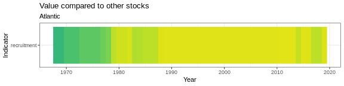

5.4 Recruitment
Recruitment data were pulled from assessmentdata::stockAssessmentData. Separate geom_gls() functions were fit for each region; trend lines are only shown when the trend was statistically significant, so some plots may have fewer trend lines than regions.
5.4.1 Figure
recruitmentFigure 5.19: Atlantic herring recruitment
Risk
See Methods for risk calculation details.
Rank of change compared to historical, ranked among stocks
Figure 5.20: Atlantic herring rank of change in indicator compared to historical, ranked among stocks
Rank of value (magnitude) in each year, compared to other stocks

Figure 5.21: Atlantic herring rank of value (magnitude) in each year, compared to other stocks
Rank of value (magnitude) within a single stock, compared to all years
Figure 5.22: Atlantic herring rank of value (magnitude) within a single stock, compared to all years
5.4.2 Data
recruit_data